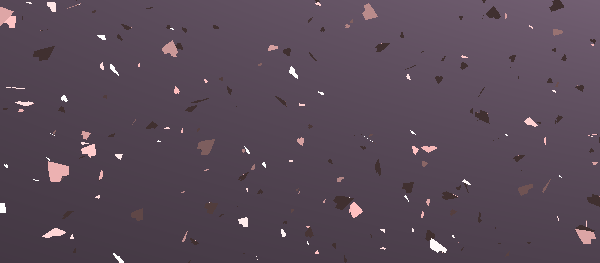
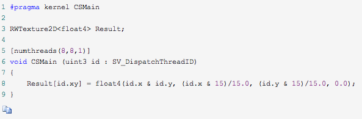
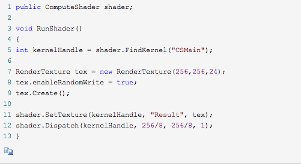
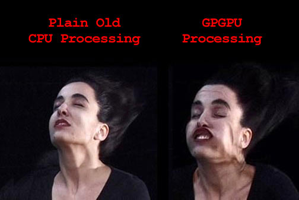
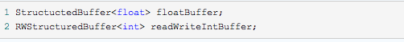
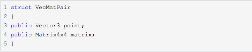
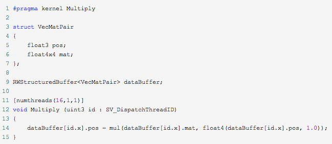
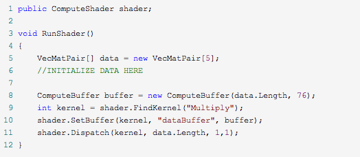
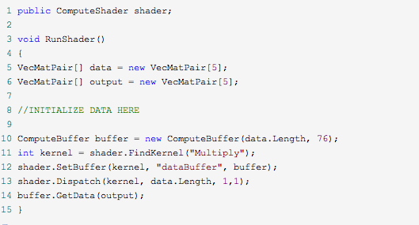

初识Unity中的Compute Shader
其实ComputeShader在Unity中出现已经有蛮长的一段时间了,因为自己一直对Shader比较感兴趣,所以最近也在尝试着学习ComputeShader，从国外的论坛上看到讨论说明已经有很多人在用了，但是在国内几乎没有什么实际应用。而且Unity官方文档一向的模棱两可原则，几乎在文档上看不到太多有用信息，只能去Google了一下，就发现了这篇文章，这篇文章对ComputeShader讲的并不是很深入，而且我觉得他英文原文有些地方讲述的也并不是十分清楚，不过对于ComputeShader的基本的一些描述都讲到了，作为一个参考材料是非常不错的。
原文链接： http://kylehalladay.com/blog/tutorial/2014/06/27/Compute-Shaders-Are-Nif...
下面是原文翻译：
我很喜欢顶点V&F Shaders(就是咱们常用的顶点片元着色器—译者注)的简单。它们只做一件事情(把顶点和颜色处理后显示到屏幕上),并且它们做的非常出色.但是有时候,这种简单会让你感觉到被限制了,你可能发现你自己正盯着一连串发生在CPU上的矩阵运算，拼命的想怎么才能把它们存在图片里呢！
或许只有我才担心这个吧.但是不管怎样,Compute Shader 解决了这个问题,而且它们用起来非常的简单,所以呢,我今天就像来讲一讲一些关于Compute Shader的基础.首先我会带你来浏览一下Unity为你自动生成的Compute Shader代码.然后再以一个利用数据结构缓冲区(structured buffer of data)为例子的Compute Shader作为结束.

Compute Shader可以被用来控制粒子的位置
Compute Shader到底是什么?
简单来说,Compute Shader 就是一段运行在 GPU上的程序,这段程序并不需要用来处理网格数据或者是纹理数据的,它是工作在OpenGL或者DirectX的内存空间中的(不像OpenCL那样拥有自己的内存空间),它们可以输出缓冲数据或者纹理并且在多个执行的线程间共享内存。
现在Unity只支持 DX11(DirectX 11) Compute Shaders,但是如果你把OpenGL更新到4.3版本,我们这些mac 粉也是有希望使用到它的。
这也意味着,这会是迄今为止第一个 只针对Windows平台的 教程.所以如果你现在使用不到windows的机器,下面这些东西可能就对你没什么帮助了。
那它们擅长什么呢？(又不擅长什么呢)
两个词：数学和并行.任何一个涉及到对数据集中的每一个元素都进行一同样一系列操作(不包含条件分支)的问题都非常适合它。而且操作集合越大,你从GPU中获得的回报就越多。
条件分支会严重影响效率,因为GPU并不非常擅长处理这种情况。但是这和写V&F Shader并没有太大区别，所以如果你对V&F Shader有些经验的话,你编写它们也不会遇到太多麻烦。
这里还有一个还有延迟的问题,把数据从GPU内存传递回CPU是要花费些时间的 ,这可能会成为你利用Compute Shader的一个瓶颈。不过你也可以通过优化内核程序(kernels)让它们工作在尽量少的缓冲数据上来一定程度上减少传递耗费的时间。但是这问题还是不可能被完全避免。
明白了没?好,让我们开始吧
既然我们是利用DX的,那Compute Shader 就要用HLSL语法来写。这和其他的Shader 语言没有太大区别。如果你写过Cg或者GLSL的话,那就没有什么问题了(其实这也是我第一次写HLSL)。
你首先要做的事情是创建一个ComputeShader,Unity的Project面板中已经有这一项了,所以这一步应该是很简单,如果你打开这个新创建的问价,你就会看到下面这些自动生成的代码(为了简洁,我把注释都删掉了).

这段代码真的是非常适合用来理解Compute Shader啊,下面我们来一行一行的看吧：
这里定义了程序的入口点(相当于Compute Shader的main函数).一个Compute Shader文件可以有多个这样的方法声明,你可以在脚本里调用任何你需要的一个。
这声明了一个变量,Shader会利用这个变量包含的数据来工作,因为我们不初始利用网格数据来工作的,所以你必须明确的声明你的Compute Shader要读或者写哪些数据。数据类型前面的”RW”表明了这个变量是可读可写的。
这一行指定了当前Compute Shader要产生的线程组的大小。GPU通过创建同时运行的多个线程，拥有大规模并行处理能力。线程组规定了如何组织这些生成的线程。在上面的代码中，我们指定了我们希望每个线程组包含64个线程。就像一个二维数组一样。
决定线程组的最优大小是一个很复杂的问题，这和你的目标硬件有很大的关系。一般来讲，把你的GPU当成一个流处理器的集合，其中的每一个处理器都能同时执行X个线程。一个处理器一次运行一个线程组,所以理想的情况，你希望你的线程组包含X个线程来充分利用处理器。我设置的值只是我根据我自己的情况,所以比起我给你们提供关于设置最优值的意见，你们还是自己去Google吧(然后在Twitter分享:D)
剩下的Shader代码都是比较正常的了,内核程序函数根据运行的线程的ID来决定它应该处理哪一个像素.然后把一些数据写到缓冲里面去。简单么？
真的来运行Shader
因为Compute Shader 不是利用网格数据来运行的,很显然我们不能把它挂在一个Mesh上让他运行。Compute Shader 需要在脚本中装配和调用,像下面一样:

这段代码有很多需要说明的地方,首先是在创建一个RenderTexture之前设置一下他的enableRandomWrite属性。这让你的Compute Shader拥有对这张纹理的写权限。如果不设置这个标记，在你的Shader中就不能把这个贴图作为写入目标。
接下来我们需要指定一下我们想调用Compute Shader中的哪个内核程序,FindKernel 方法需要一个字符串参数作为名字,这个名字可以Shader中相关内核程序的任意一个。就像我们在Shader一开头写的那个一样。一个Compute Shader在单个文件里可以拥有多个内核程序。
ComputeShader.SetTexture这个调用让我们可以把Shader需要的数据从CPU内存传递到GPU内存。才两个内存之前传递数据会给我们的程序引入延迟,程序效率被降低的程度正比于你需要传递的数据大小。由于这个原因。如果你打算每一帧都运行你的Shader，你最好认真的优化一下你真正需要操作多少数据。
传递给Dispatch方法的三个整数定义了,我们想生成的线程组数量。回想一下,每一个线程组的大小是通过Compute Shader中的numthreads来指定的,所以在上面的例子中,我们一共生成的线程数量如下：
3232个线程组64(每个线程组中线程的数量) = 65536个线程。
这样下来最后就相当于一个线程对应我们要处理的RenderTexture中的一个像素,也就是内核程序的一次调用只处理一个像素。
现在我们知道了如何编写ComputeShader和如何处理纹理内存,让我们看看我们可以用这些东西做什么。

结构缓冲(Structured Buffers)真是个好东西
处理纹理数据和我们之前的V&F Shader有点像，这让我并不是感到很激动。是时候去解放我们的GPU了,让它可以利用任何的数据。是的,这是可以做到的,就像它听起来的一样好。
结构缓冲就是一个只包含一种数据类型的数据序列，你可以创建一个存储float类型的结构缓冲,或者一个int类型的,但是不能创建一个同时存储float和int的。你可以像下面一样在ComputeShader中声明结构缓冲：

让结构缓冲真正有趣的其实是它可以用来存储struct类型的数据。我们会在第二个例子中进行说明。
对于我们的的例子,我们打算给我们的ComputeShader传递一些顶点数据，同时再为每个顶点数据传递一个我们想对他进行何种变换的矩阵。我们可以通过分别创建两个缓冲来实现(一个用来存Vector3数据，一个用来存Matrix4X4数据)。我们很容易把两种结构抽象成一种点/矩阵对结构,那我们就这么办吧。
在我们的C#脚本中,我们定义了数据类型如下：

同样我们也得在Shader中定义相应的结构，但是HLSL没有提供Matrix4x4或者Vector3类型。不过它有和他们拥有同样内存结构的数据类型。我们的Shader最后看起来会像下面一样：

注意我们的线程组现在被组织成一个一维序列。线程组被设定成什么维度对性能是没有影响的，所以你可以选一个最适合你的程序的设定。
在脚本里面创建一个一个结构缓冲和我们前面创建纹理的那个例子有些不同。对于一个缓冲，你需要指定缓冲中每一个元素占用的字节大小，对于我们的例子中的struct,它占用的字节大小实际上就是我们用到的float数量(Vector用3个，Matrix用16个)乘以每个float占用的字节大小(4字节)。创建过程如下：

现在我们需要把修改完的数据重新按照脚本中可以使用的格式传递回去,不想上面处理RenderTexture的例子。结构缓冲需要被明确的从GPU内存传递回CPU。以我的经验,这是你在使用ComputeShader时候会遇到的最影响性能的点。我目前发现的唯一缓解它的办法就是优化你的缓冲,从而让它在不影响你使用的情况下尽量的小,并且只有在你真的非常需要的时候才从shader中向外传递数据。
把数据传递会给CPU的代码非常的简单，你需要做的就是用一个相同类型的缓冲区接收它。我们修改上面的脚本让它把shader计算的结果回传到第二个序列中，如下：

这就是全部内容了,你应该去看看profiler,确切的感受一下从GPU传递数据给CPU需要耗费多少时间.但是我发现,如果你用你的Compute Shader处理一个足够大的数据集的时候,这些代价是值得的。